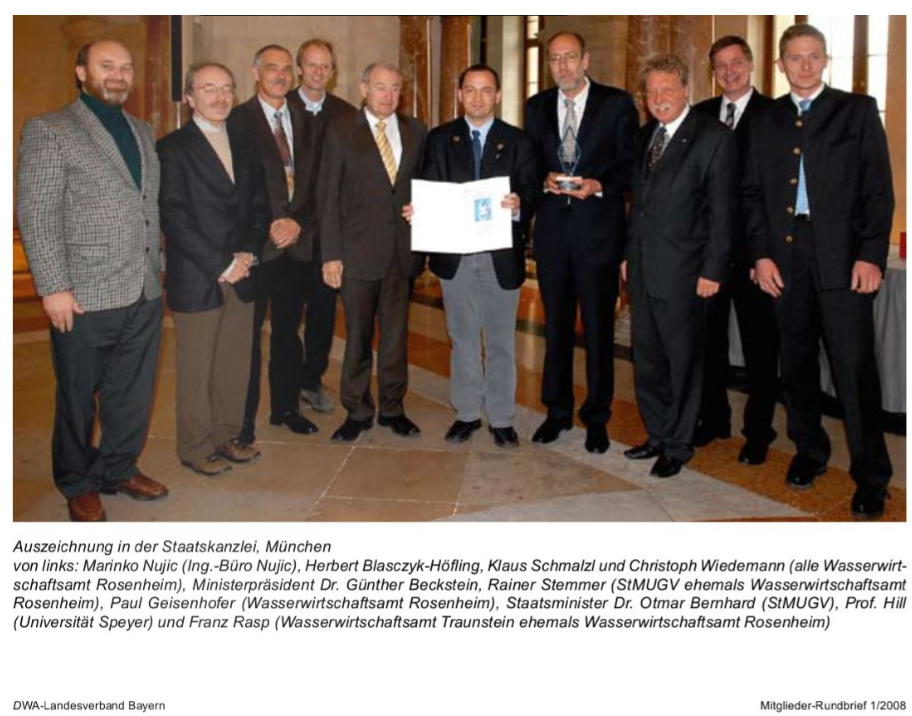

Über uns
Das Ingenieurbüro Dr. Nujic wurde 1999. in Deutschland gegründet. Als spezialisiertes Büro für die Strömungsmodellierung haben wir in den letzten 20 Jahren zahlreiche Projekte bearbeitet und verschiedene Modelle für den Einsatz in der Wasserwirtschaft entwickelt, darunter Hydro_AS-2D, Hydro_GS-2D, Hydro_FT-2D, Laser_AS-2D, Flussnetzgenerator, etc. Inzwischen setzen zahlreiche Institutionen (mehr als 400 hundert) weltweit die Modelle erfolgreich ein.
Seit 2012. beschäftigen wir uns fasst ausschließlich nur noch mit der Softwareentwicklung. So haben wir in der Zeit 2012. – 2014. an einer GPU Version gearbeitet in der Hoffnung, dass es uns gelingen wird ein schnelleres Modell zu erstellen. Die GPU- Version hat aber nach ihrer Fertigstellung leider nich das erwünschte Ergebnis gebracht. Kurz danach wurden die früher genanten Modelle im Jahr 2014. an die Firma Hydrotec verkauft und werden fortan von denen weiterentwickelt und vermarktet.
Seitdem arbeiten wir an einer neuen Generation der Strömungsmodelle (genant H_SIM), die durch impliziten Ansatz sowie hohe Parallelisierung und Vektorisierung / HPC vor allem schnelle Berechnungen ermöglichen.
Das in Deutschland ansässige Ingenierbüro Dr. Nujic wurde Ende 2017. geschlossen. Kurze Zeit danach wurde das Büro IB-NUJIC j.d.o.o. in Kroatien eröffnet. Das Büro existiert mittlerweile als Familienunternehmen:
- Dr.-Ing. Marinko Nujić
- Dipl. Mat. / Phys. Kinga Nujić
- Kristina Nujić (Informatikstudentin)
- Katarina Nujić (Informatikstudentin)

Dienstleistungen
- Softwareentwicklung
- Schulungen
- Technisches Support
- Beratungen
-
Strömungs- und Stofftransportmodellierung
- Webdesign